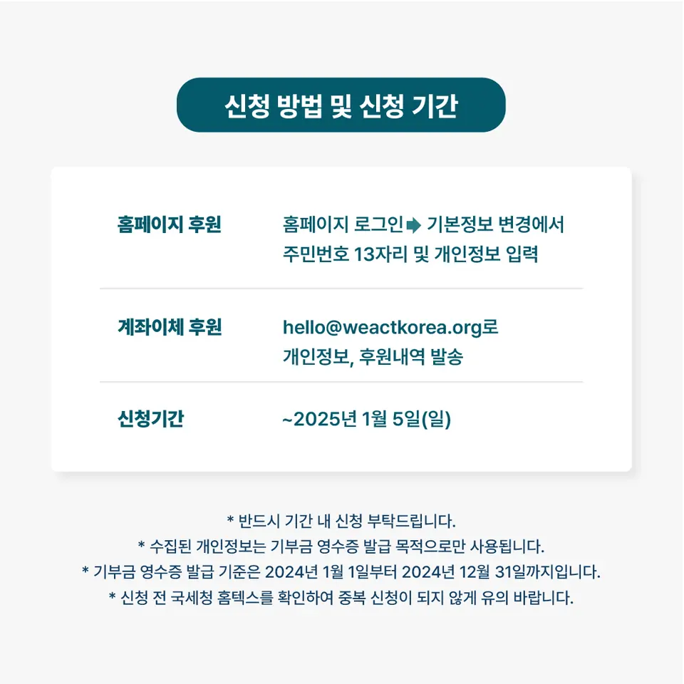

공지사항
2024년 기부금 영수증 발급안내


📢❝2024년 기부금 영수증 발급 안내 드립니다❞
안녕하세요 위액트입니다.
2024년 사단법인 위액트와 함께 ACT해주신 후원자님들에게 감사드립니다. 후원자님들의 사랑과 관심으로 위액트는 올해에도 위기동물 및 피학대동물의 구호 활동 외 여러 활동을 이어갈 수 있었습니다. 어느덧 2024년 연말이 다가와 위액트 후원자님들에게 기부금영수증을 발급하고자 하오니 다음 안내 사항을 확인해 주시길 바랍니다.
▪️기부금 영수증 발급 대상
2024년 1월 1일 ~ 2024년 12월 31일내 정기, 일시후원을 하신 회원 및 후원자님.
▪️발급 조건
1. 2025년 1월5일까지 후원자님의 성함, 주민등록번호 13자리 / 법인 사업자번호 10자리 및 개인정보 정확하게 기입.
2. 안내된 날짜까지 개인정보 확인 및 입력을 해주셔야 국세청 연말정산 웹사이트에서 후원 내역을 확인하실 수 있습니다.
*회원정보가 변경되었거나 정보 입력이 안되신 분들은 아래 절차에 따라 정보 입력 및 확인을 부탁드립니다.
▪️신청 방법
▫️위액트 웹사이트를 통해 정기/일시 후원하신 경우
1. 위액트 홈페이지를 통해 개인정보 확인 및 업데이트
로그인 페이지 바로가기>> 클릭!
▫️무통장/계좌이체를 통해 직접 후원하신 경우
1. 성함, 주민등록번호(법인 사업자번호 10자리), 주소(우편번호 및 상세주소 포함), 연락처, 이메일주소, 후원자 성함과 일자가 표기된 후원내역 캡쳐이미지를 첨부하여 hello@weactkorea.org 로 제출
▪️출력/발급 가능 시기
⭐️2025년 1월 5일(일)까지 개인 정보 등록 / 제출 완료한 후원자에 한함.
▫️위액트 홈페이지: 2025년 1월 15일 이후 (웹사이트를 통한 후원자인 경우에만 해당)
후원하기> 개인후원 내역 조회 '바로가기' 클릭> 출력서비스 > 기부금 영수증
▫️홈택스: 2025년 1월 15일 이후(모든 후원자에 해당)
▪️기타 안내
1. 사단법인 위액트는 지정 기부금 단체입니다.
기부코드: 40(지정기부금)
2. 기부금 영수증 발급 일정
-1월5일까지 정기 및 일시후원자님 개인정보, 후원 내역 확인
-1월15일부터 홈택스 연말정산 간소화 서비스에서 조회 가능
3. 공제 대상 및 한도
-공제한도: 개인: 소득금액의 30% / 법인: 소득금액의 10%
-공제율:1천만원 이하 20% / 1천만원 초과분의 35%
-합산기준: 2024년 1월1일~2024년 12월31일까지의 기부금
-부양가족 범위: 기본공제대상 배우자(연소득 1백만원 이하) 및 자녀(만 20세 이하)뿐 아니라 기본공제 대상 직계존속(연소득 1백만원 이하의 만 60세 이상) 및 형제자매(연소득 1백만원 이하의 만 20세 이하 및 60세 이상)등이 지출한 기부금에 대해서도 근로자가 소득공제를 받을 수 있습니다.
4. 기부금 공제 관련 문의: 국세청 상담센터 ☎ 126번
추가 문의사항은 hello@weactkorea.org로 주시면 답변 드리겠습니다.
다시한번, 위액트와 함께해주셔서 진심으로 감사드립니다.
THANK YOU FOR ACTING WITH US! 💙